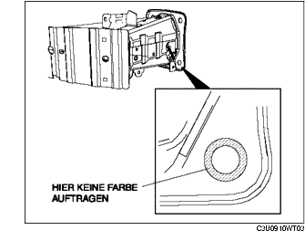

VORDERE STOSSFÄNGERVERSTÄRKUNG AUSBAUEN/EINBAUEN
B3E091050070W01
1. Den vorderen Stossfänger ausbauen. (Siehe VORDEREN STOSSFÄNGER AUSBAUEN/EINBAUEN.)
2. Die vordere Kombileuchte ausbauen. (Siehe VORDERE KOMBILEUCHTE AUSBAUEN/EINBAUEN.)
3. Die Hupe abmontieren. (Siehe HUPE AUSBAUEN/EINBAUEN.)
4. Die folgenden Teile aus dem Weg schaffen
-
(1) Unterboden
-
(2) Elektrische Servolenkungs-Ölpumpe (LF)
-
(3) Waschanlagenbehälter
5. Gemäß der Reihenfolge in der Tabelle ausbauen.
-
Achtung
-
• Schraube A (nur die Stelle links unten) nach dem Einbau ersetzen durch den Spezial-Ersatzteil (Teil-Nr. BPYK 50 0Z2) um eine gute Massenverbinding für die Hupe zu erhalten.
|
1
|
Schraube A
|
|
2
|
Schraube B
|
|
3
|
Vordere Stoßfängerverstärkung
|
6. Der Einbau erfolgt in umgekehrter Reihenfolge.
7. Nach dem Einbau sicherstellen, dass die Hupe normal funktioniert.
Einbauhinweis für vordere Stoßfängerverstärkung
Wiederverwenden der vorderen Stoßfängerverstärkung
-
Achtung
-
• Um eine gute Karosseriemassenverbindung zu erhalten, keine Farbe in dem Bereich auftragen, wo der Flansch von Schraube A die Verstärkung des vorderen Stoßfängers berührt.

Einbau einer neuen Verstärkung des vorderen Stoßfängers
1. Das Klebeband von der Verstärkung des vorderen Stoßfängers entfernen.
-
• Wenn sich das Klebeband bereits gelöst hat, eventuell am beklebten Bereich anhaftenden Rost oder Farbe abkratzen.
2. Nach dem Einbau von Schraube A Grundierung auf den Bereich der vorderen Stoßfängerverstärkung auftragen, der unlackiert geblieben ist.